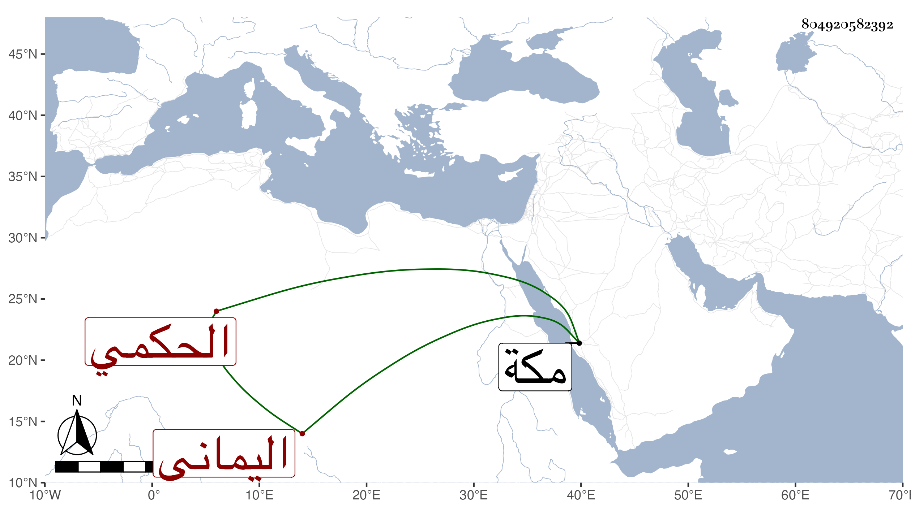

0902Sakhawi.DawLamic.ITO20230111-ara1.EIS1600.804920582392
Biography ID: 804920582392
448
أبو القسم بن أبي الفتح بن أبي القسم بن أحمد بن إبراهيم بن محمد بن عيسى ابن مطير بن علي بن عثمان الحكمي اليماني الماضي أبوه وجده ويعرف كسلفه بابن مطير . ولد سنة ست وثلاثين وثمانمائة ببيت حسين ونشأ ولقيته بمكة في سنة أربع وتسعين وهو حسن السمت طيب الرائحة نير ذو سيادة بأصله وللناس فيه اعتقاد وأخبرني أنه حضر عند جده وحدثني عن بيتهم بكرامات وأحوال وتكررت زيارته لي وكنت أستأنس به ثم لقيته في سنة ست واللتين بعدها وأضافني في بيته الذي أنشأه بحارة القرشيين ونعم الرجل .
